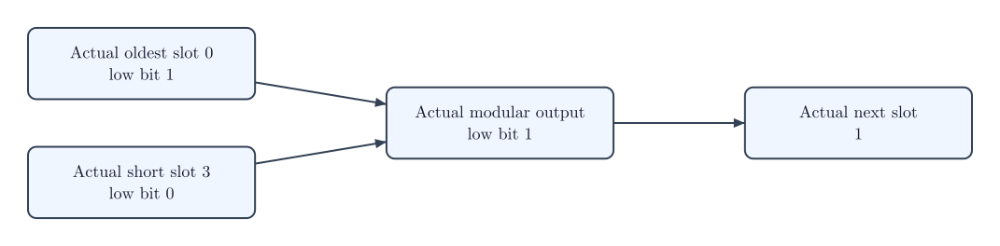
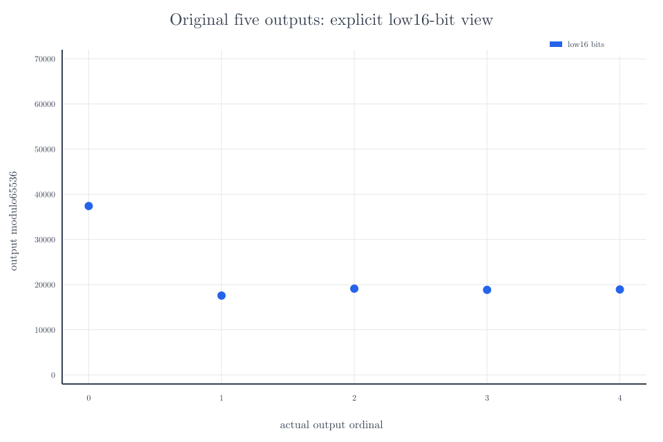
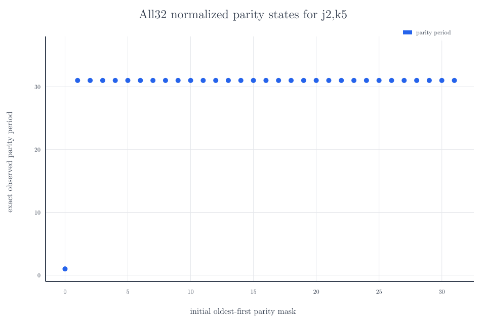
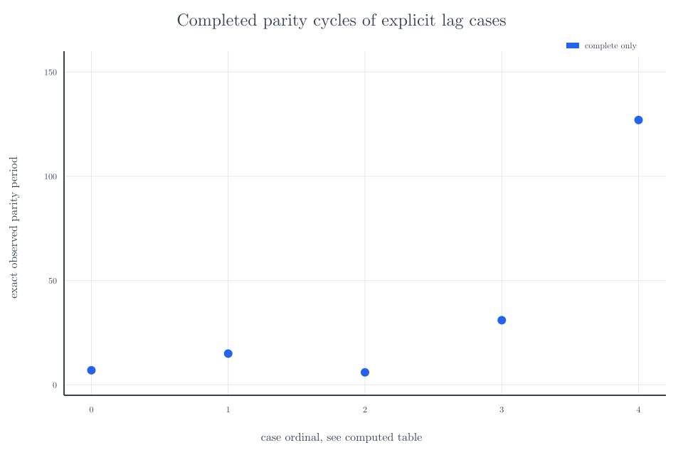

Lagged Fibonacci through actual ring updates
Abstract
A pseudorandom engine must generate a repeatable stream while retaining a compact internal state. An additive lagged-Fibonacci engine updates one word of a lagged ring using two earlier words modulo2^64. We inspect actual operands and ring positions, preserve the original five reproducibility comparisons, and expose the low-bit linear recurrence through exact finite parity-state cycles. Reproducibility and small projected periods are distinct from statistical quality, cryptographic security and the full64-bit engine period.
The actual ring recurrence
With0<j<k, keep k unsigned64 words ordered by age. The oldest word represents x[n−k], and the word j places behind the next output represents x[n−j]. The update is
The physical index points to the oldest slot. The short operand is index−j wrapped within k, and the sum overwrites the oldest slot before the index advances. SplitMix64(seed) supplies the initial k words in physical order; this seeding convention is part of the native stream. The shared next_step and next_u64 use exactly the same single transition. Raw inspection does not reset the inherited distribution cache.
Construction and storage cost O(k); each raw update takes O(1) fixed-width work. Copying an engine copies both ring position and distribution cache. The arithmetic recurrence is not a cryptographic generator, arbitrary lag choices do not imply maximal period, and the scalar seed selects at most2^64 initial states.
See actual operands before wraparound
Use the original seed2026 and lags j2,k5. The trace preallocates all observations before consuming eight real transitions, retaining complete before/after boundary rings. The diagram shows the actual first update’s parity projection; the table retains its full64-bit operands and outputs.
#include <dm/dm.hpp>
int main() {
std::filesystem::create_directories("build");
dm::random::LaggedFibonacci64 g(2026, 2, 5);
const auto t = dm::random::lagged_fibonacci_trace(g, 8);
std::print("| actual update | overwrite slot | short slot | long operand | short operand | modular " "output | next slot |\n| ---: | ---: | ---: | ---: | ---: | ---: | ---: |\n");
for (std::size_t i = 0; i < t.steps.size(); ++i) {
const auto &e = t.steps[i];
std::print("| {} | {} | {} | {} | {} | {} | {} |\n", i, e.write_index,
e.short_index, e.long_word, e.short_word, e.value,
e.next_index);
}
const auto &e = t.steps.front();
dm::graphics::Diagram d;
d.node("long", {0, 1},
std::format("Actual oldest slot {}\nlow bit {}", e.write_index,
e.long_word & 1ULL)).node("short", {0, -1},
std::format(
"Actual short slot {}\nlow bit {}",
e.short_index,
e.short_word & 1ULL)).node(
"sum", {6, 0},
std::format("Actual modular output\nlow bit {}", e.value & 1ULL)).node(
"next", {12, 0}, std::format("Actual next slot\n{}", e.next_index)).edge("long", "sum").edge("short", "sum").edge("sum", "next").save_svg("build/lagged_fibonacci_update.svg");
}| actual update | overwrite slot | short slot | long operand | short operand | modular output | next slot |
|---|---|---|---|---|---|---|
| 0 | 0 | 3 | 15824617304438902051 | 7097835237234771186 | 4475708467964121621 | 1 |
| 1 | 1 | 4 | 8699989649721214301 | 14602530494585831241 | 4855776070597493926 | 2 |
| 2 | 2 | 0 | 12310341597754734734 | 4475708467964121621 | 16786050065718856355 | 3 |
| 3 | 3 | 1 | 7097835237234771186 | 4855776070597493926 | 11953611307832265112 | 4 |
| 4 | 4 | 2 | 14602530494585831241 | 16786050065718856355 | 12941836486595135980 | 0 |
| 5 | 0 | 3 | 4475708467964121621 | 11953611307832265112 | 16429319775796386733 | 1 |
| 6 | 1 | 4 | 4855776070597493926 | 12941836486595135980 | 17797612557192629906 | 2 |
| 7 | 2 | 0 | 16786050065718856355 | 16429319775796386733 | 14768625767805691472 | 3 |

Original five reproducibility comparisons
The original example constructed two engines with seed2026,j2,k5 and compared five successive raw outputs. Retain exactly that experiment, now exposing the actual shared transition outputs rather than five unexplained true flags. The plot deliberately shows only each output’s low16 bits; the table is the complete64-bit evidence. Equal streams from equal initial state establish deterministic reproducibility, not randomness or independence.
#include <dm/dm.hpp>
int main() {
std::filesystem::create_directories("build");
dm::random::LaggedFibonacci64 a(2026, 2, 5), b(2026, 2, 5);
const auto t = dm::random::lagged_fibonacci_trace(a, 5);
std::vector<double> x, y;
std::print("| original comparison | actual first stream word | actual second stream word | equal |\n| " "---: | ---: | ---: | --- |\n");
for (std::size_t i = 0; i < 5; ++i) {
const auto v = b.next_u64();
std::print("| {} | {} | {} | {} |\n", i, t.steps[i].value, v,
t.steps[i].value == v);
x.push_back(i);
y.push_back(t.steps[i].value & 65535ULL);
}
auto p = dm::graphics::RPlot::create();
p.points(x, y, "low16 bits", {37, 99, 235}, 6).y_limits(-2000, 72000).title(
"Original five outputs: explicit low16-bit view").x_label(
"actual output ordinal").y_label("output modulo65536").save_svg(
"build/lagged_fibonacci_original.svg");
}| original comparison | actual first stream word | actual second stream word | equal |
|---|---|---|---|
| 0 | 4475708467964121621 | 4475708467964121621 | true |
| 1 | 4855776070597493926 | 4855776070597493926 | true |
| 2 | 16786050065718856355 | 16786050065718856355 | true |
| 3 | 11953611307832265112 | 11953611307832265112 | true |
| 4 | 12941836486595135980 | 12941836486595135980 | true |

Exact parity cycles are smaller objects
Taking the low bit turns addition into XOR. Normalize the ring to oldest-first order before packing its k parities into a mask; this removes the changing physical index from the projected state. For j2,k5 the mask update drops the oldest bit and appends old_bit0 XOR old_bit3. A repeated normalized mask proves a cycle of this projected deterministic recurrence, not a repeat of the complete64-bit engine.
The native orbit inspector advances an independent complete engine copy, captures each actual distinct normalized mask, and reports the first repeated mask’s offset and cycle length. The original engine and cached distribution state are untouched. It supports k<=63 and an explicit distinct-mask cap; incomplete inspection has no inferred period.
For this tiny lag pair, find a seeded representative of every one of the32 parity masks and inspect its complete finite orbit. The zero mask has period1 and the31 nonzero masks share a period31 cycle. This exhaustive projection check does not establish the full word period or acceptable simulation quality.
#include <dm/dm.hpp>
int main() {
std::filesystem::create_directories("build");
std::map<std::uint64_t, std::pair<std::uint64_t, std::size_t>> periods;
for (std::uint64_t seed = 0; seed < 4096 && periods.size() < 32; ++seed) {
dm::random::LaggedFibonacci64 g(seed, 2, 5);
const auto o = dm::random::lagged_fibonacci_parity_orbit(g, 32);
if (!o.complete)
throw std::runtime_error("incomplete tiny parity orbit");
periods.try_emplace(o.masks.front(), seed, o.period);
}
if (periods.size() != 32)
throw std::runtime_error("not all parity states represented");
std::vector<double> x, y;
std::print("| actual initial parity mask | representative seed | actual complete parity period |\n| " "---: | ---: | ---: |\n");
for (auto[mask, example] : periods) {
std::print("| {} | {} | {} |\n", mask, example.first, example.second);
x.push_back(mask);
y.push_back(example.second);
}
auto p = dm::graphics::RPlot::create();
p.points(x, y, "parity period", {37, 99, 235}, 5).y_limits(-1, 38).title(
"All32 normalized parity states for j2,k5").x_label(
"initial oldest-first parity mask").y_label("exact observed parity period").save_svg("build/lagged_fibonacci_parity.svg");
}| actual initial parity mask | representative seed | actual complete parity period |
|---|---|---|
| 0 | 18 | 1 |
| 1 | 57 | 31 |
| 2 | 26 | 31 |
| 3 | 16 | 31 |
| 4 | 10 | 31 |
| 5 | 44 | 31 |
| 6 | 8 | 31 |
| 7 | 11 | 31 |
| 8 | 30 | 31 |
| 9 | 7 | 31 |
| 10 | 23 | 31 |
| 11 | 12 | 31 |
| 12 | 19 | 31 |
| 13 | 15 | 31 |
| 14 | 87 | 31 |
| 15 | 3 | 31 |
| 16 | 9 | 31 |
| 17 | 94 | 31 |
| 18 | 6 | 31 |
| 19 | 93 | 31 |
| 20 | 2 | 31 |
| 21 | 0 | 31 |
| 22 | 20 | 31 |
| 23 | 36 | 31 |
| 24 | 76 | 31 |
| 25 | 37 | 31 |
| 26 | 122 | 31 |
| 27 | 1 | 31 |
| 28 | 5 | 31 |
| 29 | 25 | 31 |
| 30 | 43 | 31 |
| 31 | 21 | 31 |

Lag choices and incomplete inspection
Hold seed2026 fixed while changing lag pairs, including a reducible small recurrence and the default j24,k55. This is a family of separate complete engine constructions. At most4096 distinct parity states are inspected per case. A capped incomplete result is printed as unknown period rather than treating zero or the cap as a measured cycle length. The plot includes only completed tiny projected cycles. It is not a benchmark or a demonstration of the default engine’s full period.
#include <dm/dm.hpp>
int main() {
std::filesystem::create_directories("build");
std::vector<double> x, y;
std::size_t ordinal = 0;
std::print("| case ordinal | actual short lag | actual long lag | retained distinct parity masks | " "complete | actual parity period or unknown |\n| ---: | ---: | ---: | ---: | --- | --- |\n");
for (auto[j, k] : std::vector<std::pair<std::size_t, std::size_t>>{{1, 3},
{1, 4},
{2, 4},
{2, 5},
{3, 7},
{24, 55}}) {
dm::random::LaggedFibonacci64 g(2026, j, k);
const auto o = dm::random::lagged_fibonacci_parity_orbit(g, 4096);
std::print("| {} | {} | {} | {} | {} | {} |\n", ordinal, j, k,
o.masks.size(), o.complete,
o.complete ? std::to_string(o.period) : "unknown");
if (o.complete) {
x.push_back(ordinal);
y.push_back(o.period);
}
++ ordinal;
}
auto p = dm::graphics::RPlot::create();
p.points(x, y, "complete only", {37, 99, 235}, 6).y_limits(-5, 160).title(
"Completed parity cycles of explicit lag cases").x_label(
"case ordinal, see computed table").y_label("exact observed parity period").save_svg("build/lagged_fibonacci_lags.svg");
}| case ordinal | actual short lag | actual long lag | retained distinct parity masks | complete | actual parity period or unknown |
|---|---|---|---|---|---|
| 0 | 1 | 3 | 7 | true | 7 |
| 1 | 1 | 4 | 15 | true | 15 |
| 2 | 2 | 4 | 6 | true | 6 |
| 3 | 2 | 5 | 31 | true | 31 |
| 4 | 3 | 7 | 127 | true | 127 |
| 5 | 24 | 55 | 4096 | false | unknown |

Scope and verification
Raw observations share the canonical modular transition and do not replay prefixes. Consuming trace admission counts both complete boundary rings plus every transition record,2*k+count, before allocating all required storage and before advancing the caller engine. The default million-entry ceiling excludes fields/capacities/bytes/RAM; zero disables only this optional cap. Allocation/quota failure leaves the caller engine unadvanced. The separate parity-orbit bound controls retained distinct masks of an independent copy and reports incomplete inspection honestly.
An independent exact modular SplitMix/ring model checked16 seed/lag controls
and16000 actual updates, including every original operand, slot and intended
wraparound. A separate binary shift-register model checked38 projected orbits,
including all32 states of the original tiny lag pair. Another16000 raw outputs
matched the frozen engine exactly. Native controls verify complete
pre-consumption admission, owned boundary snapshots, nonmutating orbit
inspection and inherited normal-cache behavior. Fresh companion-file and
exact11-symbol changed-engine documentation scopes passed; the broader shared
random-file backlog remains outside the completed manifest. The ten-report
shared build passed141 native CTest cases,45 directly instrumented
address/undefined-behaviour sanitizer cases,90 compiled/executed public
examples,412/412 scoped file definitions plus11/11 changed lagged-Fibonacci
engine definitions, and ten representative clangd hovers. All four complete
report programs executed and all four native figures were visually reviewed.
Receipts and repeatable checks are retained under
build/mepml-conversion/batch-184-193/.
References
D. E. Knuth, The Art of Computer Programming, Volume2: Seminumerical Algorithms, third edition(1997), chapter3, author’s book page. The native SplitMix initialization, physical-ring observations and explicitly finite parity inspection are specified above; arbitrary-lag maximal-period claims are not inferred.